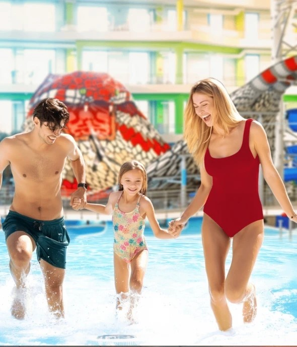
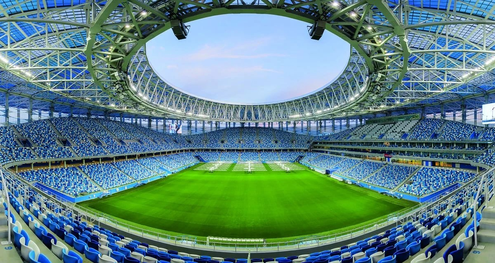
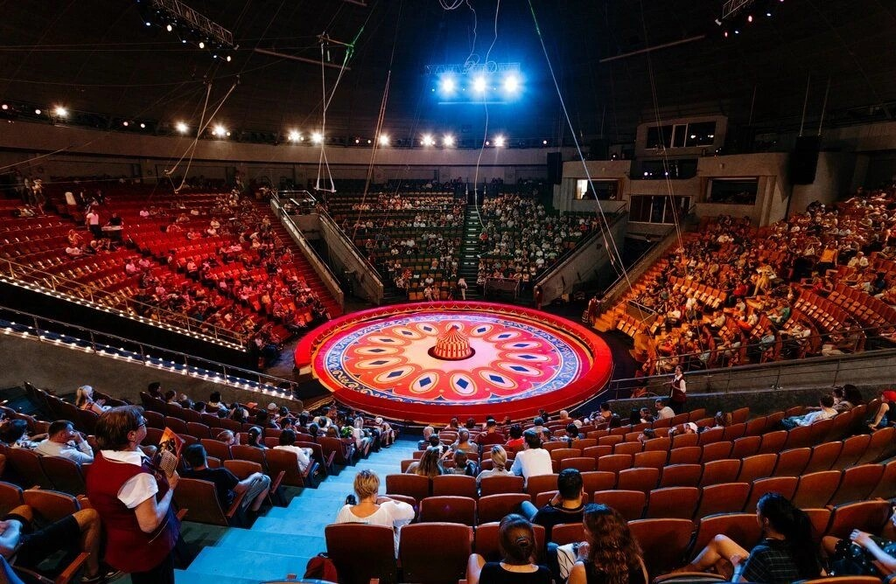
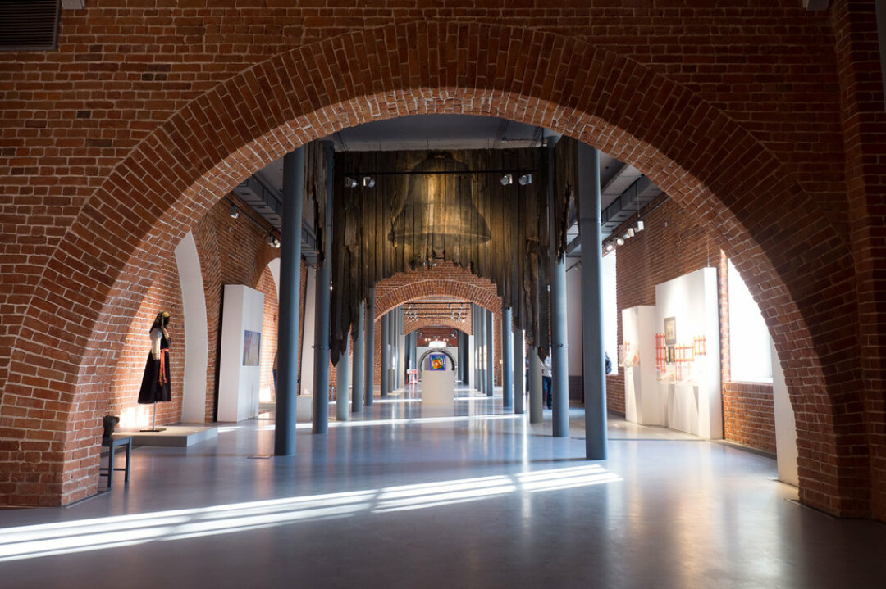
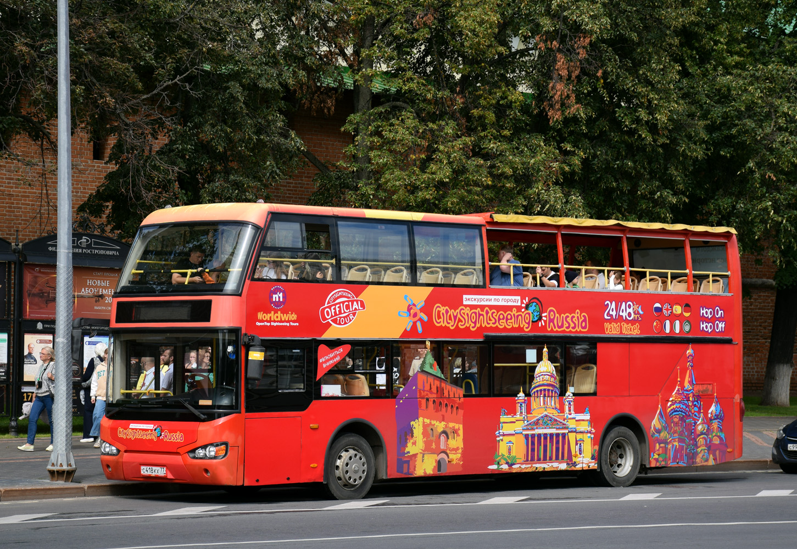
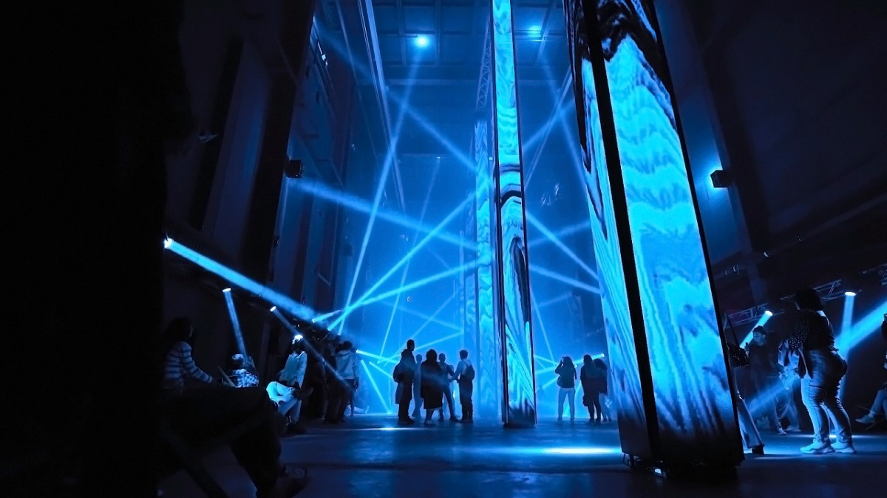
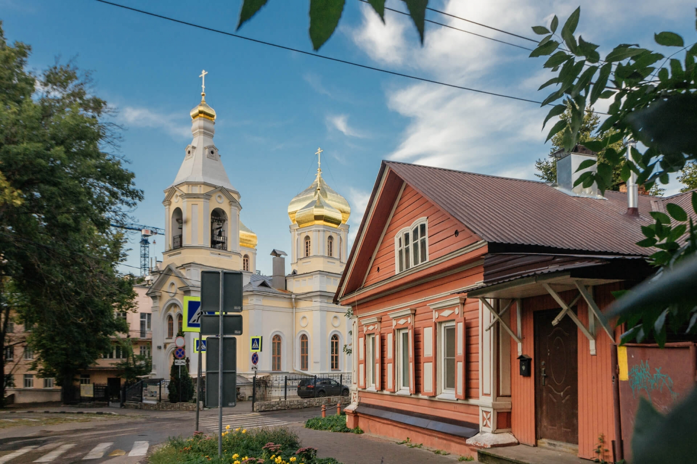
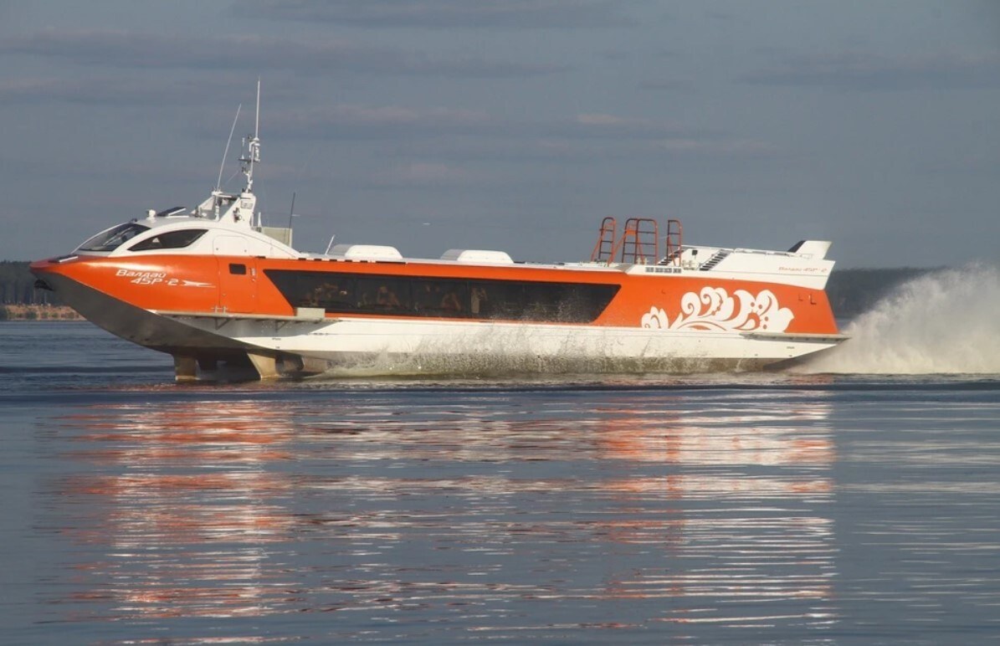
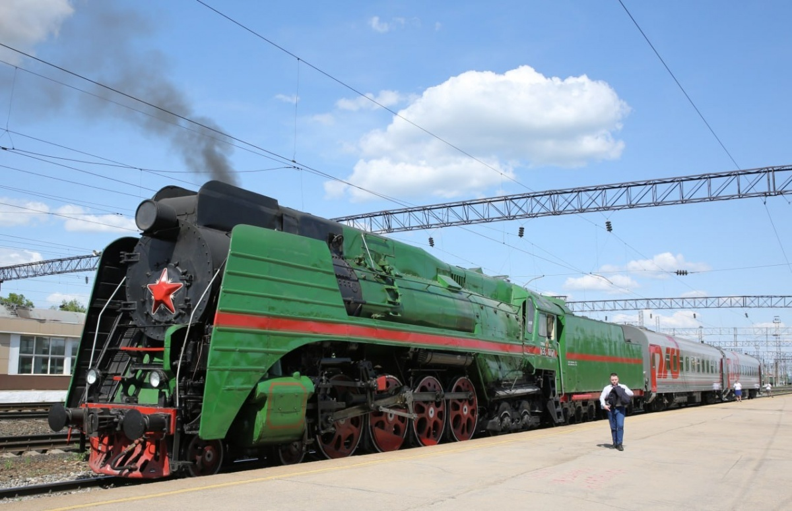
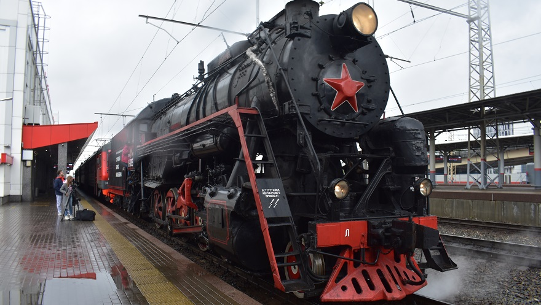

Дневной трип «Столица рассвета»
Мы собрали для Вас наши самые яркие культурные события, чтобы Вы могли не просто хорошо провести время, а по-настоящему прочувствовать Нижний Новгород, уловить его уникальный ритм и влюбиться в его атмосферу.
Нижний Новгород

Посещение одного из крупнейших аквапарков России. Вас ждут захватывающие горки, бассейны с подогревом и зоны отдыха. После водных процедур — прогулка по живописному парку «Швейцария» с панорамным видом на город.
Подробнее
Поддержите родную команду на стадионе «Нижний Новгород»! Матч 13-го тура ФНЛ против красноярского «Енисея». Зарядитесь энергией трибун и почувствуйте дух настоящего футбола.
Подробнее
Волшебная атмосфера, захватывающие трюки и море эмоций для всей семьи. Нижегородский цирк славится своими традициями и яркими программами с участием лучших артистов.
Подробнее
Прогуляйтесь по древним стенам Нижегородского Кремля и посетите выставочные залы в Арсенале. Здесь проходят лучшие выставки современного искусства и исторические экспозиции.
Подробнее
Удобный двухэтажный автобус проведет вас по самым знаковым местам города. Откройте для себя Нижний Новгород заново с высоты второго этажа и влюбитесь в его улицы.
Подробнее
Первая в России персональная выставка французского медиахудожника и режиссёра Тома Ванза «36 degrés». Уникальное сочетание технологий и искусства в пространстве бывшего завода.
Подробнее
Проект, направленный на возрождение исторической территории. Экскурсии и мастер-классы позволят вам окунуться в атмосферу купеческого прошлого и увидеть, как возрождается история.
ПодробнееГородец и Арзамас

Увлекательное путешествие по Волге на речном автобусе «Водолет». В программе — посещение музейного комплекса «Город Мастеров», где вы познакомитесь с народными промыслами и историей древнего города.

Отправляясь данным маршрутом, туристы смогут посетить уникальные достопримечательности города Арзамаса, такие как Арзамасский историко-художественный музей, дом-музей А. М. Горького, увидеть памятные монументы, насладиться красотами многочисленных соборов.
Ретропоезд

10 октября, 15:15 (продолжительность 2 часа). Отправляйтесь в уникальное путешествие на ретропоезде! Выберите вагон по душе: музыкальный праздник или ностальгия по СССР. Стоимость билета: 3500 ₽.
🎵 2 вагон «МУЗЫКАЛЬНЫЙ»
Самый музыкальный вагон, где любимые песни разных поколений объединяют детей и взрослых. В программе: музыкальное лото, зрелищное шоу фокусов, музыкальный баттл «Дети против родителей», зажигательная дискотека под живую музыку и сладкое угощение для каждого пассажира.
🇺🇸 3 вагон «НАЗАД В СССР»
Самый ностальгический вагон. Гостей ждут любимые игры советского детства, шоу фокусника с участием зрителей, настоящее посвящение в сентябрят с весёлыми испытаниями и памятными атрибутами. Каждый гость сможет написать письмо и отправить его в любую точку мира, сделать профессиональные фотографии с героями программы, получить сладкое угощение и памятный подарок.
Ночной трип «Столица закатов»
Нижний Новгород по праву носит звание «Столицы закатов». Мы рекомендуем наши проверенные места: бары и рестораны, где в самой неформальной и уютной обстановке вы сможете насладиться потрясающими закатами, отличной кухней и по-настоящему ощутить душу пробуждающегося ночного города.